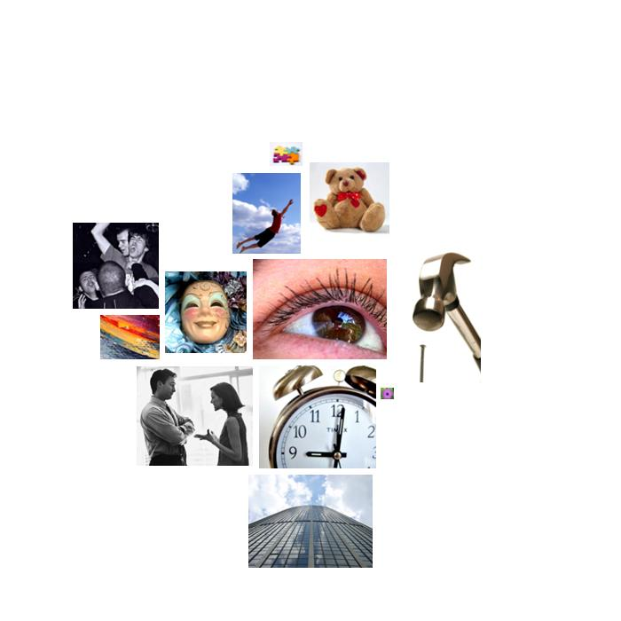

laura_bush.txt
  vision
vision watching, witnessed, seen, seen, imagine, watch, watch, colorado, watch, pink, pink, scenarios, watching, imagine, watch, see, look, see, watch, grayer, seen, seen
 hard
hard hard, hardship, hard, hard, hard
 temporal_references
temporal_references ever, tonight, years, ago, then, then, time, when, time, time, tonight, every, when, every, now, years, while, time, ever, tonight, once, everything, time, time, ever, weekend, when, once, again, when, now, years, ago, years, today, today's, years, now, every, while, when, then, everybody, years, years, ago, month, years, years, years, years, now, soon, time, months, every, then, today, during, now, when, everything, past, today's, past, years, every, years, times
 height
height higher, high, high, grow, grown, spirit, growing, height, grow, grew, sky
 social_behavior
social_behavior thank, introduced, ask, thank, meeting, visited, reminded, convinced, convincing, answer, ask, say, talk, education, visit, education, commitment, instruction, education, talk, helped, told, said, talk, said, able, talk, allowing, talk, talk, protect, told, said, depended, talked, discussing, helped, thanks, treated, education, election, met, told, reminded, told, said, participation, declared, guide, responsibility, generous, ask, met, tell, treats, meets, invites, visit, confidence, ask, tell, remind, explain, confidence, reminded, responsibilities, promise, help, thank
 chaos
chaos ruined, chance
 positive_affect
positive_affect enjoying, relief, happy, enthusiasm
 affection
affection like, kindness, welcome, like, grateful, appreciate, like, beloved, married, friends, loving, loved, appreciation, love, kind
 descent
descent fellow, fall, fallujah, fall's, fall
 expressive_behavior
expressive_behavior bellowed, playwright
 abstraction
abstraction knew, learn, believe, know, why, think, proven, determined, quality, proof, determined, fact, research, science, important, known, believe, important, learning, learned, known, know, know, knew, knew, knew, weighing, knew, consequence, decide, choices, almost, concentration, different, know, learn, almost, them, know, think, almost, ideals, ideals, them, history, learned, know, thought, thought, learned, know, know, thinks, them, think, possible, them, them, believe, possibilities, certainty, determined
 general_sensation
general_sensation beautiful, beautiful
thank, introduced, ask, thank, meeting, visited, reminded, convinced, convincing, answer, ask, say, talk, education, visit, education, commitment, instruction, education, talk, helped, told, said, talk, said, able, talk, allowing, talk, talk, protect, told, said, depended, talked, discussing, helped, thanks, treated, education, election, met, told, reminded, told, said, participation, declared, guide, responsibility, generous, ask, met, tell, treats, meets, invites, visit, confidence, ask, tell, remind, explain, confidence, reminded, responsibilities, promise, help, thank